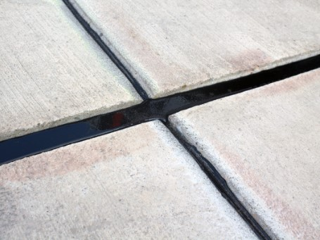

Главная
О нас
Контакты
Новости
Документы
Контроль качества
Каталоги/брошюры
Продукция
Деформационные швы
Преднапряжение монолитных мостов
Мастики для мостов
Взлетно-посадочные полосы
Для шпунтовых свай
Дорожные полотна
Продукты для помещений
Присадки
Эмульсии
Дополнительная продукция
Реализованные проекты
Бетон

Мастики для заливки швов
Санация трещин
Мастики для ремонта